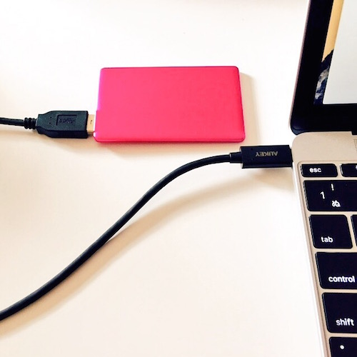
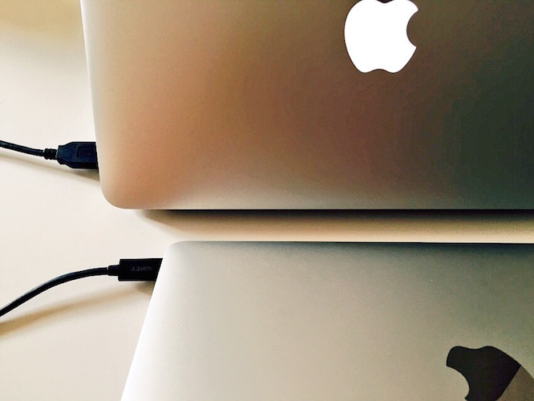
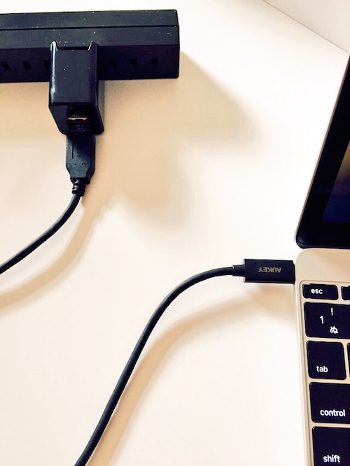

MacBookをUSB Type-Cでモバイルバッテリーにつないで充電とか(更新)
概要
まともっぽいUSB Type-C to USB Type Aケーブルが届いたので、
モバイルバッテリーとか、電源プラグ、他端末に対して、充電できるかどうかいろいろ試してみていた。
結果的には使用中のアプリケーションの電力消費状態にまで影響受けるのがわかった。
あとAnker Astro3すごい。4,000円くらいでMacBook稼働中でも3時間くらい作業時間伸ばせて、しかもその間もれなく充電されてる。
試した組み合わせ
1.MacBookとモバイルバッテリー

2.MacBookとMacBook Airとか

3.USB-電源プラグ(2.4A出るiPad用) + USB Type-Cケーブル

4.Anker Astro3 (4A出るやつ)
結果としては以下のような感じになった。
1.MacBookとモバイルバッテリー
-> 給電中状態に落ち着く
2.MacBookとMacBook Airとか
-> 給電中状態に落ち着く
3.USB-電源プラグ(2.4A出るiPad用) + USB Type-Cケーブル
-> 充電中状態になることが多い
-> アプリケーションによる消費電力が大きい条件下だと、充電中状態と給電中状態を彷徨う可能性がある。
4.Anker Astro3 (4A出るやつ)
-> 常に充電状態になる
-> 動作中でも最大3~4時間くらいMacBookの動作時間が延長できそう。しかも給電ではなく充電。
-> 動作してない状態 = sleep中とかだとものすごい勢いで充電してた。
給電中状態について
「モバイルバッテリーの仕様に依る」のだと思うが、最初充電できてたけどすぐ給電オンリーになる、というのがあった。
給電中は下記の状態になる。

どこまで給電の部分でMacBookの電力消費を相殺できているのかは、パッとはわからなかった。
充電中状態について
純正のアダプタ、あるいはUSB電源プラグ + USB Type-CをMacBookに接続して少しすると、
まず充電可能かどうかの判定がなんかあって、


このように、充電完了までの時間がでたり、表示が変化する。
この状態になると充電が可能になるが、MacBookで使用中のアプリケーションの電力消費が大きいと、
純正アダプターと非純正のもので差が出た。
たとえばめっちゃ大量のファイルをDropBoxに追加して同期をとる、とかやると、
純正アダプターだと充電状態のままだったのに対し、
非純正の組み合わせだと、「給電状態に落ちた」ことがあった。
うん、電源消費が激しいアプリケーションがある状態下だと、変動するっぽい。
4A出るAnker Astro3だったら、問題なく充電状態が継続し続けた。